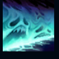
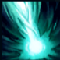

Karthus
| Karthus The Deathsinger | |
|---|---|
| Release date | 12.06.2009 |
| Class | Battlemage |
| Positions | Jungle |
| Resource | Mana |
| Range type | Ranged |
| Adaptive type | Magic |
| Base statistics | |||
| Health | 550 – 2029 | Mana | 467 – 985.5 |
| Health regen. | 6.5 – 15.85 |
Mana regen. | 8 – 21.6 |
| Armor | 18 – 77.5 | Attack damage | 46 – 101.25 |
| Magic resist. | 30 – 38.5 | Crit. damage | 175% |
| Move. speed | 335 | Attack range | 450 |
Karthus este profetul uitării, un spirit pururea viu ale cărui cântece înspăimântătoare vestesc apariția morții. Muritorilor de rând le e teamă de darul pe care îl oferă, dar el vede doar frumusețe și puritate în îmbrățișarea eternității, o comuniune perfectă între viață și moarte. Atunci când iese la iveală din Insulele Umbrelor, Karthus, apostolul morților vii, răspândește bucuria morții. | SFIDAREA MORȚII După moarte, Karthus accesează o formă imaterială, care îi permite să continue să folosească vrăji. |
|||
|---|---|---|---|---|
DEVASTARE Karthus provoacă o mică explozie cu efect întârziat într-o locație, provocându-le daune inamicilor din zonă. Provoacă daune crescute împotriva inamicilor izolați. |
||||
 |
ZIDUL DURERII Karthus creează un zid de energie prin care se poate trece. Viteza de mișcare și rezistența la magie ale unităților inamice care trec prin zid sunt reduse pentru o perioadă redusă de timp. |
|||
| PROFANARE Karthus fură în mod pasiv energie de la victimele lui, câștigând mană la fiecare ucidere. De asemenea, Karthus se poate înconjura de sufletele prăzii sale, provocând daune inamicilor din apropiere, însă această acțiune îi consumă rapid mana. |
||||
 |
RECVIEM După ce se concentrează timp de 3 secunde, Karthus provoacă daune tuturor campionilor inamici. |